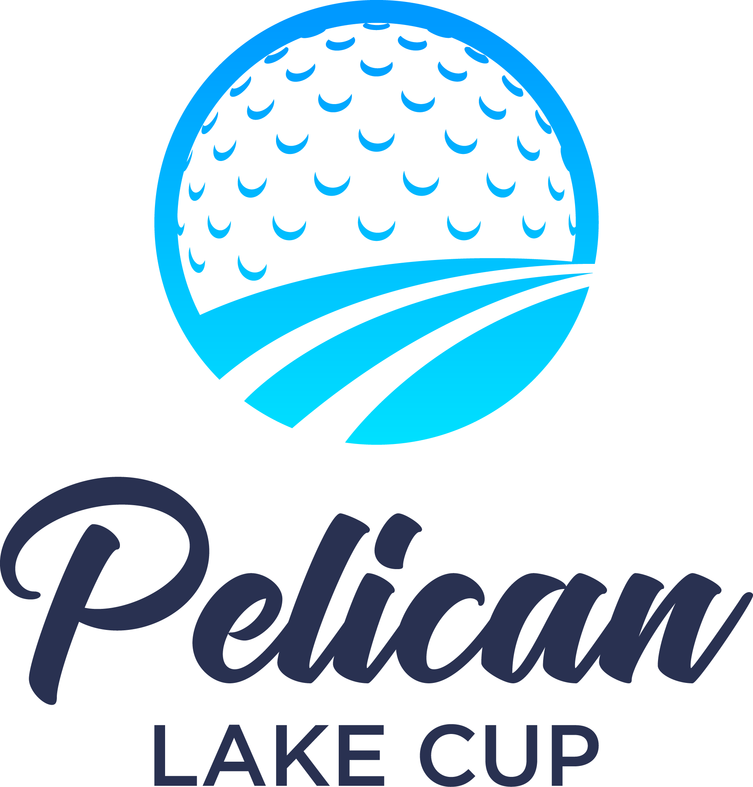

The Battlefield
The Course
Know the ground before you step on it.
Breezy Point, Minnesota
Deacon's Lodge
An Arnold Palmer Signature design, opened in 1999 across 150 acres of Minnesota's Brainerd Lakes country. Mixed forest, wetland, and the shoreline of Pelican Lake make it one of the state's most beautiful — and least forgiving — layouts.
It is also the Cup's home ground. Deacon's hosted the inaugural weekend in 2020, returned in the 2023 rotation, and held all three rounds in 2024.
- Design
- Arnold Palmer Signature
- Opened
- 1999
- Par
- 72
- Holes
- 18
- Greens
- Penncross bentgrass
- Facility
- Spikeless
- Address
- 9252 Breezy Point Drive, Breezy Point, MN

Setup
Tee Options
Four tee boxes are available. Tee assignments are based on handicap index and the requirements of each format.
| Tees | Slope | Rating | Yardage |
|---|---|---|---|
| Black | 144 | 74.1 | 6,964 |
| Blue | 142 | 72.3 | 6,541 |
| Combo | 133 | 71.6 | 6,418 |
| White | 130 | 70.0 | 6,067 |
Handicap Calculation
All adjustments use the course slope and rating from the tees played:
Course Handicap = Index × (Slope ÷ 113) + (Course Rating − Par)
Each round then applies its own allowance — see the Format page.
Course Rotation
Past Cups have moved between Deacons Lodge, Whitefish, White Birch, Crosswoods, and Golden Eagle. The 2027 rotation is confirmed closer to the event.
Course Conditions
Cart rules, dress code, practice facilities, and pace-of-play expectations will be shared closer to the event.